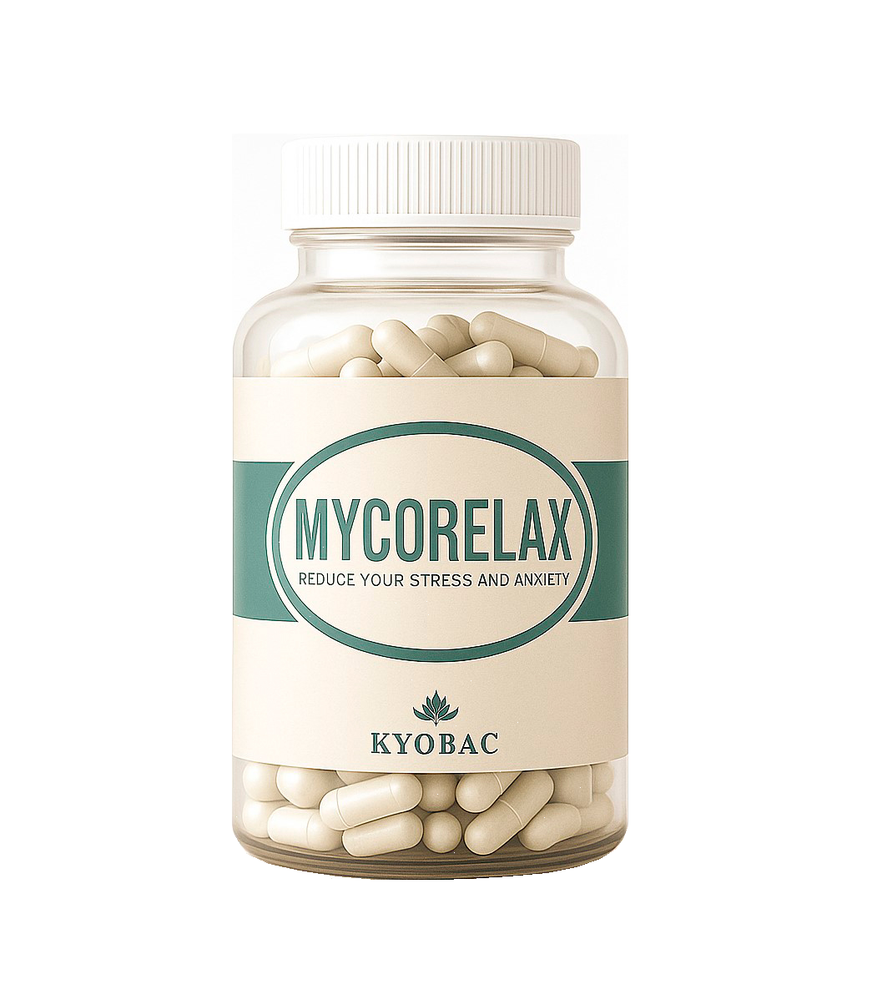

¿Qué ofrecemos?
MycoRelax es un postbiótico a base de Mycobacterium kyogaense inactivo. Su eficacia reside en su formulación, que contiene el lípido ácido 10(Z)- hexadecenoico. Está demostrado (Amoroso et al., 2021) que este compuesto logra:
● Estimular la producción de compuestos antiinflamatorios naturales en el cuerpo.
● Modular la microglía, las células inmunitarias clave del sistema nervioso.
● Disminuir la neuroinflamación, un factor biológico subyacente al estrés crónico, induciendo así respuestas ansiolíticas y antidepresivas que preparan al cerebro para ser más receptivo a las estrategias terapéuticas.
